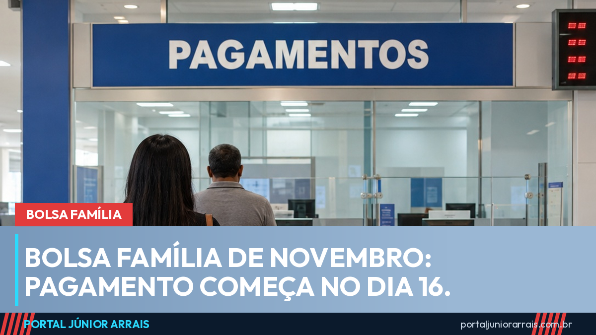

Bolsa Família de novembro: pagamento começa dia 16 e deve sair em três dias

O Bolsa Família de novembro começa a ser pago em 16 de novembro, segunda-feira, data de início prevista no calendário oficial de 2026. A diferença em relação aos anos anteriores é que, desde outubro, o Ministério do Desenvolvimento e Assistência Social (MDS) concentrou o pagamento em poucos dias por causa do El Niño, e informou que a medida vale também para novembro e dezembro.
Como deve ficar o calendário de novembro
Em outubro, o pagamento manteve a data de início do calendário original e foi espremido em três dias: NIS final 1 no primeiro dia, final 2 no segundo e todos os outros finais no terceiro, como o portal mostrou na matéria sobre o Bolsa Família antecipado de outubro. Se o mesmo formato for repetido em novembro, a ordem fica assim:
- NIS final 1 — segunda-feira, 16 de novembro;
- NIS final 2 — terça-feira, 17 de novembro;
- NIS finais 3, 4, 5, 6, 7, 8, 9 e 0 — quarta-feira, 18 de novembro.
Até a publicação desta matéria, o MDS ainda não tinha divulgado a tabela de novembro final por final. Quando sair, o portal atualiza este texto. Pelo calendário original, o pagamento de novembro iria de 16 a 30; com a concentração, ninguém precisa esperar até o fim do mês.
O número que vale é o último algarismo do NIS do responsável familiar, impresso no cartão do programa. Nas cidades em situação de emergência ou calamidade reconhecida pelo governo federal, o pagamento costuma sair de uma vez no primeiro dia, para todos os finais.
Quanto vem na conta
Novembro é o segundo mês com o valor reajustado. Desde outubro, nenhuma família recebe menos de R$ 691, e os adicionais por criança, gestante e nutriz continuam somados ao valor básico. As regras de quem tem direito e de quanto cada família recebe estão no guia do Bolsa Família.
Bloqueios e revisão do cadastro
Quem foi chamado na revisão do Cadastro Único e não atualizou os dados no prazo pode ter o benefício bloqueado. O portal explicou o assunto na matéria sobre a revisão que convoca 11 milhões de famílias. Benefício bloqueado não é benefício cancelado, mas o dinheiro fica retido enquanto a pendência não é resolvida.
Cuidado com golpe
Toda virada de mês traz mensagens prometendo "parcela extra", "13º do Bolsa Família" ou "liberação antecipada" mediante cadastro num link. Também circulam boatos de que o programa teria acabado depois da eleição, o que o MDS já desmentiu. Nenhum órgão do governo cobra taxa nem pede Pix, senha ou foto do cartão para pagar o benefício.
Se o dinheiro não cair na data do seu NIS ou vier um valor diferente do esperado, não pague ninguém para "destravar". Procure um profissional de sua confiança para verificar se há bloqueio, pendência no cadastro ou outra causa.
Fontes oficiais
- MDS: pagamento concentrado vale também para novembro e dezembro (19/10/2026)
- MDS: calendário de pagamentos do Bolsa Família de 2026
- Lei nº 14.601/2023 (regras do Programa Bolsa Família)
Conteúdo informativo — não substitui orientação individualizada sobre o seu caso.
Júnior Arrais · Editor do Portal Júnior Arrais
Comunicador de Ubá (MG). Escreve todos os dias sobre benefícios sociais, INSS, trabalho e economia do dia a dia, a partir do Diário Oficial, de portarias e de fontes oficiais, em linguagem simples. Conheça a linha editorial e a política de correções do portal.